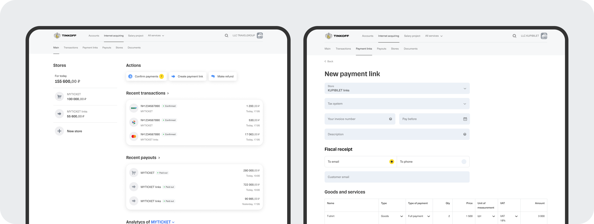
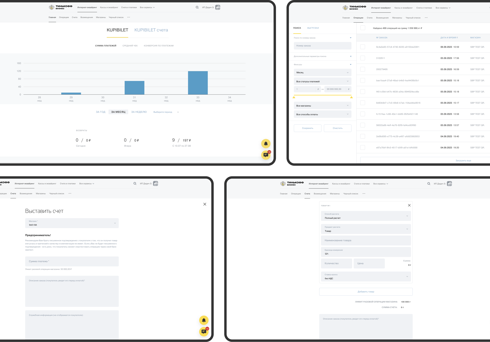
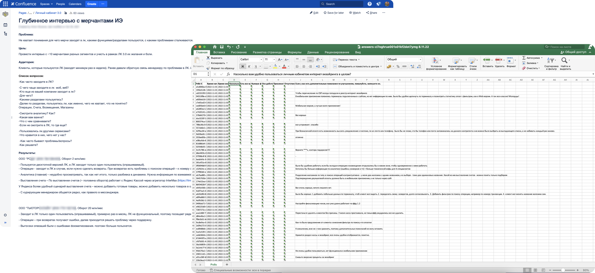
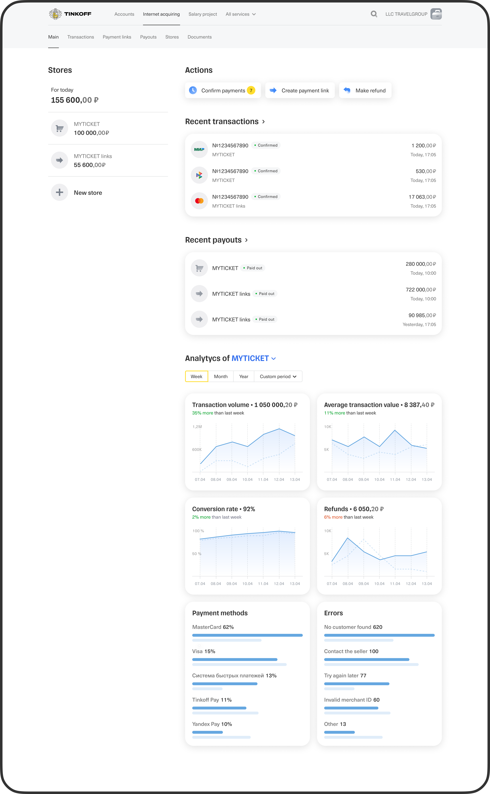
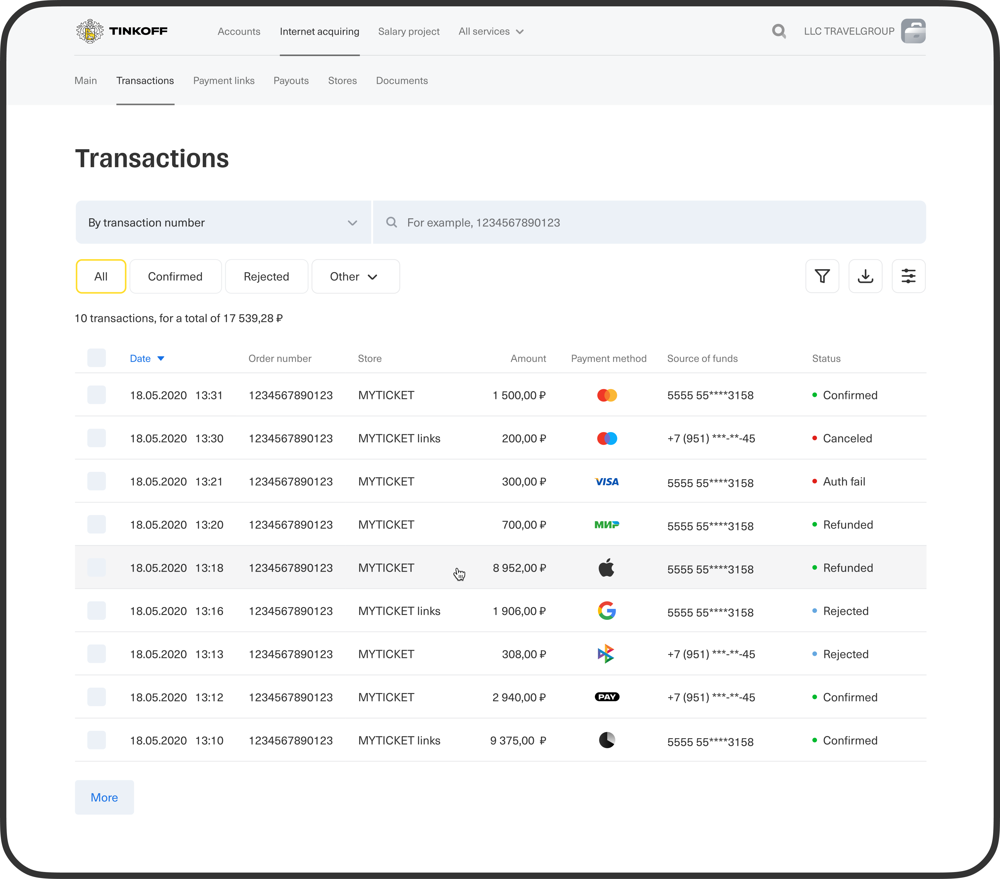
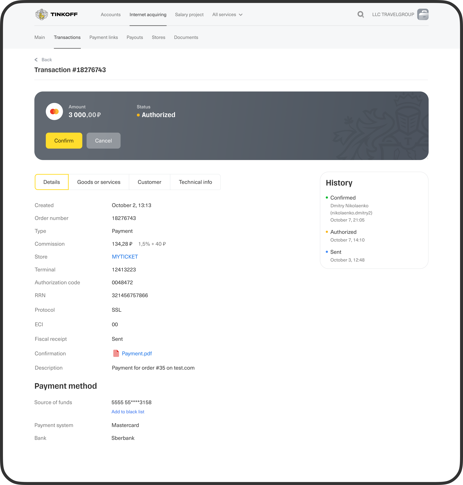
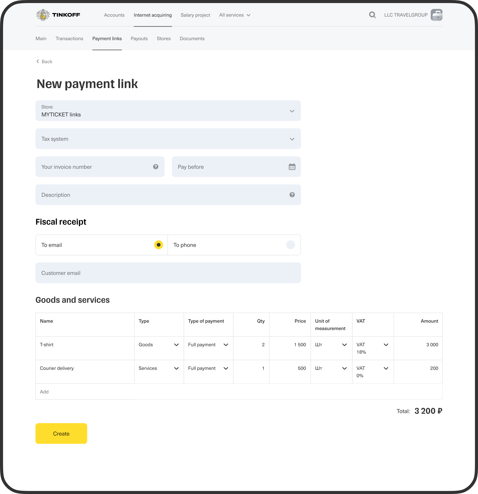
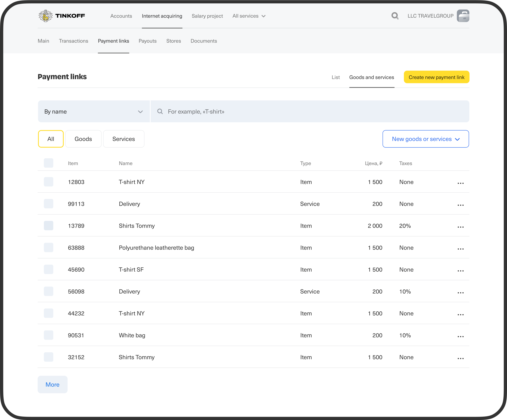
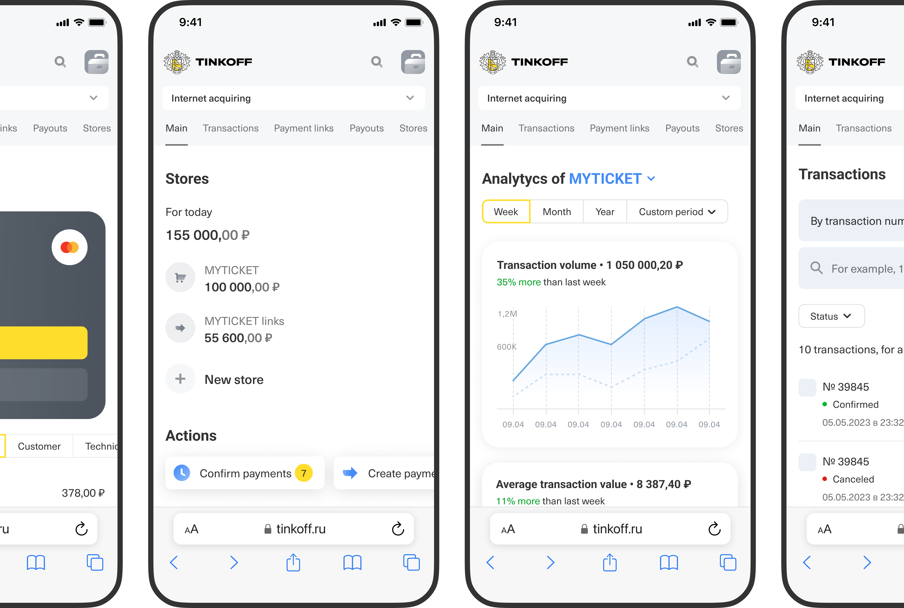

Redesign merchant’s personal account

Context
Tinkoff Kassa is a top-2 acquirer in Russia with 300k+ merchants. With the help of our service merchants accept payments online, issue invoices and manage their transactions and orders in the interface of personal account
Problems
- The first version of the personal account was made more than 7 years ago and is no longer functional or consistent with the tinkoff ecosystem
- There is no understanding of exactly how merchants use the personal account, what is important to them
- No mobile version available
- Small retention

To do
Conduct research and identify the main usage scenarios of the personal account, gather insights and build a new version of the interface based on them.
Research
Conducted 12 in-depth interviews with different categories of users and measured CSAT.
Key Insights:
- Merchant visits personal account to view or confirm recent transactions and refunds, invoice, make refunds
- 80% don’t use analytics because they are difficult to use
- Need the amount of turnover
- Need a mobile version
- Inconvenient billing, especially when there are a lot of items, you have to enter it yourself piece by piece

Solution
Main page
- Total turnover for all shops and individually
- Quick actions that cover the most frequent merchant scenarios
- Recent transactions and payouts
- Easy-to-understand analytics with key metrics placed at the top

Transactions
- The main functionality has been moved to the top (search and filter by status)
- Ability to personalise the table by customising columns
- Transaction detail including list of items


Payment links
- We have added the ability to upload items piece by piece or using an excel file, now when issuing a new invoice you can select a product or service from the list and do not have to re-enter each time. Each new item added when issuing a new invoice will be saved for future use


Mobile version
- All layouts were adapted for comfortable use on mobile devices — the previous version had no mobile adaptation at all

Impact
CSAT 4.2 → 4.5Merchants rated the new version of the personal account higher
Retention +15%Merchants visited the homepage more often, including from mobile devices
Support calls −18%The interface is now more intuitive, with transparent analytics and quick actions on the home screen